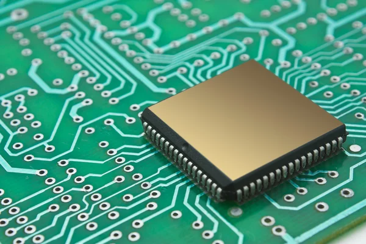
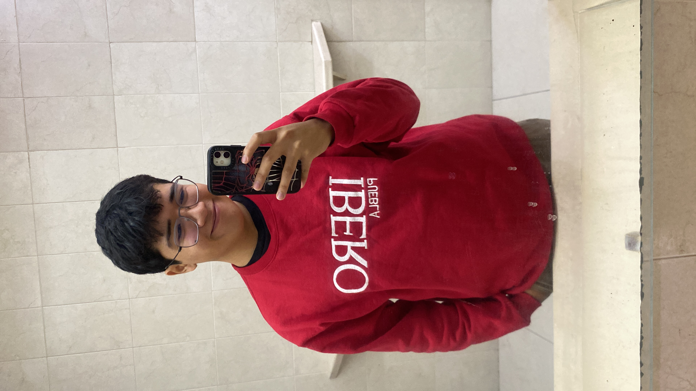

Maestro: Javier Osorio Figueroa | Alumnos: Leo y Tommy
Introducción
Esta es página donde publicaremos documentaremos acerca de nuestro progreso en la materia de producción electronica.
Producción Electronica
¿Que hacemos en producción electronica?

La materia de producción electronica es una materia enfocada en diseñar y fabricar componentes electronicos desde cero, desde el planteamiento del proyecto hasta la fabricación de placas. Aqui abarcamos desde la elaboración de esquematicos y el diseño de placas en software como KiCad o Altium, hasta el uso de herramientas y software especializado para el corte, soldado y ensamblaje de dichas placas.
KiCad
Resumen: ¿Qué es KiCad?
KiCad es un paquete de software de código abierto para la automatización del diseño electrónico (EDA). Los programas permiten la captura de esquemas y el diseño de placas de circuito impreso (PCB) con salida en formato Gerber e IPC-2581 . El paquete funciona en Windows, Linux y macOS y está licenciado bajo la licencia GNU GPL v3 .
Fuente: https://www.kicad.org/about/kicad/Menu
Menu principal de KiCad
Al iniciar un proyecto de KiCad podemos observar en la barra lateral...bla bla bla más texto
Mods
Resumen: Pagina de Mods
Mods CE (Community Edition) es un derivado del proyecto de investigación mods de CBA. Mods es una herramienta modular multiplataforma destinada a fablabs la cual se basa en módulos independientes pero interrelacionados. Potencialmente, mods puede utilizarse para CAD, CAM, control de maquinaria, automatización, creación de interfaces de usuario, lectura de dispositivos de entrada, interacción con modelos físicos y mucho más.
Debido a que nosotros vamos a ocupar una Roland Monofab PCB SRM-20, en el menu lateral de Programs, nosotros buscamos este programa para empezar a calcular y exportar los archivos
Proyecto Final
Investigación Principal
En progreso
Espacio reservado para publicar los avances o la entrega final del proyecto escolar.
Información del Estudiante

Nombre: Leonardo Barrientos Miguel
Estudiante de: Ingenieria Mecatronica, Ibero Puebla
Materia/Grupo: Produccion Electronica grupo B
Contacto: 203586@iberopuebla.mx
Información del Estudiante
Nombre: Tomas Toledo Fernandez
Estudiante de: Ingenieria Mecatronica, Ibero Puebla